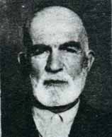

Þükrü Ýçhan [ -1966]

Bediüzzaman'ýn Isparta'daki ikameti sýrasýnda kendisine iki evini tahsis eden zat.
| · | Risale-i Nur þakirtlerine köþkünü tahsis eden Þükrü Efendidir. Rüyada ona diyorlar ki, “Senin o köþküne Hazret-i Peygamber Aleyhissalâtü Vesselâm gelmiþ.” O da koþarak gidip, Hazret-i Peygamber Aleyhissalâtü Vesselâmý çok nuranî ve sürurlu bir halde bulup ziyaret etmiþ. (Sikke-i Tasdik) |
| · | Þükrü Efendi hem kendi köþkünü, hem merhum kardeþi Nuri Efendinin köþkünü Risale-i Nur’un ders ve telifine verdiði bir zamanda, onun þehirdeki evine muttasýl büyük bir haliçe binasý ateþ aldý. Bütün o büyük bina yandýðý halde, Þükrü Efendinin evine sirayet etmedi. Hattâ yanan haliçe binasýnýn müþtemilâtýndan olup, haliçe binasý ile Þükrü Efendinin hanesine bitiþik olan ahþap odunluk dahi yanmadý. Bu vaziyeti gören herkes hayret içinde kaldý. Fakat Risale-i Nur ile alâkalarý olanlarýn þüpheleri kalmadý ki, Þükrü Efendi Risale-i Nur’un telifine bu iki köþkü verdiði için, onun bereketiyle, harika bir surette, hem kendi hanesi, hem merhum kardeþinin hanesi o müthiþ yangýndan kurtuldu. (Sikke-i Tasdik) |
| · | Risale-i Nur þakirtlerinin merkezi olan Þükrü Efendinin köþkünün komþusu seksen yaþýnda muhterem Alil Osman Çavuþ namýnda bir zât, Risale-i Nur naþirlerine hücum zamanýndan bir gün sonra rüyasýnda görüyor ki: Güneþ ile kamer, beraber olarak köþkün içine girip parlýyorlar. (Sikke-i Tasdik) |
| · | Isparta’da, Risale-i Nur’un ders ve neþrine iki köþkünü bir zaman tahsis eden kardeþimiz Þükrü Efendinin iki genç evlâdýnýn vefatý beni müteessir etti. Çünkü, beþ altý yaþýnda iken, mâsume kerimesi yanýma geldikçe, her defa “Adýn nedir?” soruyordum. Mâsumâne, kemal-i fahirle, “Hayrünnisa” derdi; beni þefkatle güldürüyordu. Cenâb-ý Hak, o mübarek mâsumeyi birden Cennetine aldý, þu dünya cehenneminden kurtardý. Ve merhum mahdumu Hayati ise, hastalýk, inþaallah onu da Hayrünnisa gibi günahsýz, mâsum yaptý. Beraber Cennet tarafýna gittiler. Bu nokta-i nazardan, ben o iki çocuðu tebrik ediyorum. Ve peder ve validelerini de hem taziye, hem mânen tebrik ediyorum ki, o iki evlâtlarý وِلْدَانٌ مُخَلَّدُونَ sýrrýna mazhar oldular. Ben, o ikisini, Risale-i Nur’un vefat eden þakirtleri içinde dualarýmýza dahil ettik. (Kastamonu) (Kaynak: Barla Blatformu Kataloðu) |